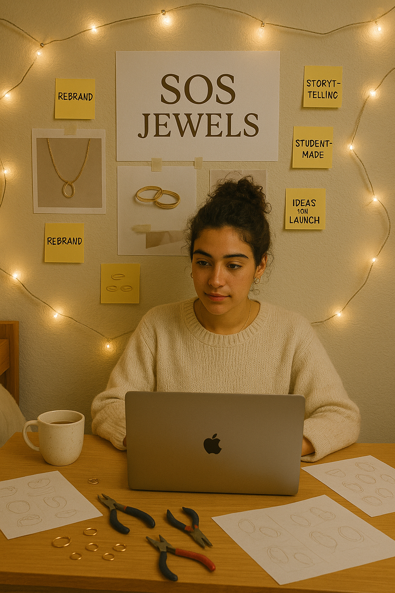
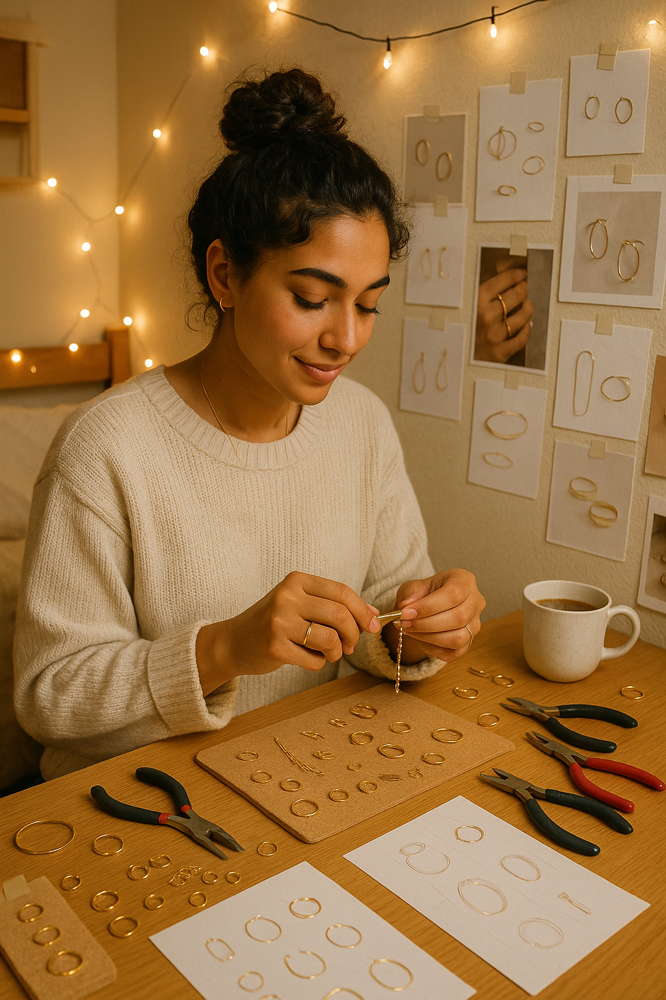

Can ChatGPT cut my marketing costs?
In this conversation, I created a hypothetical small business, a college-student-owned affordable handmade jewelry brand: Sos Jewels. I asked ChatGPT to help with marketing as a business owner with no wiggle room for paid marketing.
Will ChatGPT be able to revitalize my brand?

The Conversation
Prompt
my personal small business, Sos jewels, is really struggling. No matter what i try (paid promos, influencer content, free giveaways) my brand just isn’t doing well. The quality is good and styles are desirable. the price is so standard too! please help me and my dying company
Response
Hey Sose, first off—I’m really sorry to hear that. Running a small business is no joke, and it’s even more disheartening when you’re doing all the “right” things and it still feels like shouting into the void. But don’t give up. Let’s dig in and try to breathe some new life into Sos Jewels. You clearly care a lot and have put in real effort—that already sets you apart.
Here’s a tailored breakdown of ways we can figure out what’s going wrong and what might help turn things around:
💔 First: Why It Might Not Be Working (Even If It Should)
Too broad or unclear brand identity
If people can’t instantly understand what makes Sos Jewels unique, they’ll scroll past. “Pretty” isn’t enough anymore. Is there a niche, mission, or aesthetic your brand owns?Platform mismatch or weak funnel
Are you on the platforms your ideal audience actually uses and following up with calls-to-action that convert? Are you optimizing the journey from “discovery” to “purchase”?Lack of storytelling
Great products alone don’t sell—emotional connection does. Do people know the story behind your pieces? Behind you?Saturation + trust issues
The market is crowded and buyers are wary. Have you built trust? Shown your face? Shared reviews or BTS content?
💡 Next: What You Can Do Differently (Even Without a Giant Budget)
1. Clarify Your Brand Story & Visual Identity
- What’s your why? Your aesthetic? Your vibe?
Think of brands like Mejuri or En Route—super clear, consistent, and niche-specific. - Make your brand bio and captions feel human, not salesy.
2. Go Hyper-Niche, Not Broad
- “Jewelry for everyone” = no one.
“Delicate gold jewelry for bold first-gen women” or “gemstone pieces made for dreamers” = connection. - Consider making 1-2 “hero products” and marketing those hard.
3. Reintroduce Yourself—Face First
- People buy from people. Start posting more you: your process, your workspace, your story.
- Talk directly to camera 1–2x a week. Even if it feels cringey.
4. Revamp Your Launches: Fewer, Better
- Instead of always posting products, do mini drops every 2-3 weeks with a theme.
- Tease, build suspense, show BTS, then launch like an event.
5. Leverage Micro-Community Marketing
- Start reaching out not to influencers with big followings, but niche community builders: podcast hosts, Substack writers, mutuals with tight-knit followers.
- Offer a “custom” piece collab and let them co-create with you.
6. Audit Your Customer Experience
- Is your checkout flow smooth? Do they get a sweet unboxing moment?
- Are you capturing emails for a newsletter with personality?
📈 If You’re Open To It:
- I’d love to do a brand audit of your socials, site, and messaging—free. Just drop your handle/website.
- We could also brainstorm 1-2 new content angles or campaigns that feel fresh and personal.
You got this, Sose. It’s okay to pivot. You already have the style and product part down—now let’s align the storytelling and strategy. Want to rebuild together?
Prompt
Yes! to be honest, my brand is like a cheaper alternative to mejuri - think of gorjana jewelry but what sets me apart is that im a college student designing by hand🥺
Response
That’s such a special angle, Sose!! You being a college student designing by hand is literally your superpower—and I don’t think you’re leaning into that story hard enough yet. So many people (especially fellow students and young women) would love to support that kind of passion project—but they need to see it and feel it.
Let’s turn “I’m like Mejuri but broke and in a dorm” into a full-on brand vibe 🥹✨
🎯 Quick Wins to Try This Week
1. Brand Hook Reframe
Right now: “affordable handmade jewelry”
Let’s tweak to something like: > “handmade pieces by a 21-year-old college girl with big dreams & tiny pliers 🛠️💫” > “jewelry designed in dorm rooms, made for golden hour selfies ✨” > “like Mejuri, but by your artsy campus friend who’s always sketching rings in class”
Use this type of tone in your bio, pinned story, email footer, everywhere.
2. Series Ideas (Tiktok or IG Reels)
- “Dorm to Drop” – Document the journey of a new piece from sketch to shipping.
- “What I Wore vs. What I Made” – Outfit of the day with matching Sos Jewels.
- “Designing jewelry while romanticizing college stress” – You sketching in the library or on the quad.
- “Customer Diaries” – Share any DMs, screenshots, or unboxing reactions (even staged ones to start!).
3. Highlight Your Uniqueness in Giveaways
Instead of just “free earrings!!” say: > “✨ 1-of-1 piece designed for you by a broke college girl who would rather sketch than study for midterms 🥹 enter below ↓”
🔥 New Brand Pillars for Sos Jewels
Here’s how I’d position you to really stand out: - Relatable: “I get what looks good with a claw clip & iced coffee because… same” - Personal: “Every piece is made with actual love. Like, sweatpants love.” - Aspirational (but still real): “For main-character moments on a student budget”
Want me to help write a new bio, a pinned post, or a reintroduction caption? Or maybe mock up a post idea with a caption and photo suggestion? I got you. Just say the word 💍💛
Prompt
an example post for my rebrand would be great #### Response Absolutely! Here’s a sample reintroduction post you can use on Instagram (or tweak slightly for TikTok or a story). It’s got that warm, personal, student-entrepreneur energy that highlights your handmade craft, while still keeping it cute and cool:
📸 Image Suggestions:
- You at your desk making a piece (even a messy workspace works—adds charm!)
- A hand sketching jewelry in a notebook with tools around
- A mirror selfie wearing a few pieces, holding a coffee
- Optional: add a graphic that says “handmade in a dorm” or “meet the girl behind Sos Jewels”
💬 Caption:
hi! i’m sose – a 21 y/o college student who designs and handmakes every piece of jewelry you see here ✨
i started sos jewels because i couldn’t afford the trendy stuff i loved (lookin’ at u, mejuri 👀) – so i made my own. and now i make it for you, too 💛
think of sos jewels as your affordable go-to for dainty, dreamy pieces that feel like you.
perfect for late classes, golden hour pics, or dressing up iced coffee runs.
if you’ve been here a while, thank you. if you’re new – welcome. i’m so happy you’re here 🤍
#SupportSmallBusiness #CollegeGirlBrand #HandmadeJewelry #JewelryTikTok #MejuriVibesOnABudget
Would you like me to make a matching IG story or post series idea (like “a week in the life of a student designer”)? Or even a graphic template for your drops? #### Prompt amazinggg yes you can generate an image

My reflection
I think this conversation went really well! ChatGPT did a fine job at building me a business plan, and developing a solid marketing strategy. While the social media post recommendations were a bit out of style / wouldn’t work on Gen Z consumers, I am now worried for my future in marketing! I will remember this convo when in a real need for marketing help.